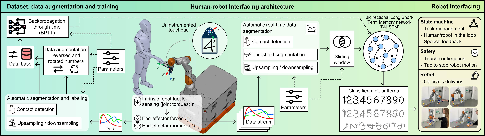
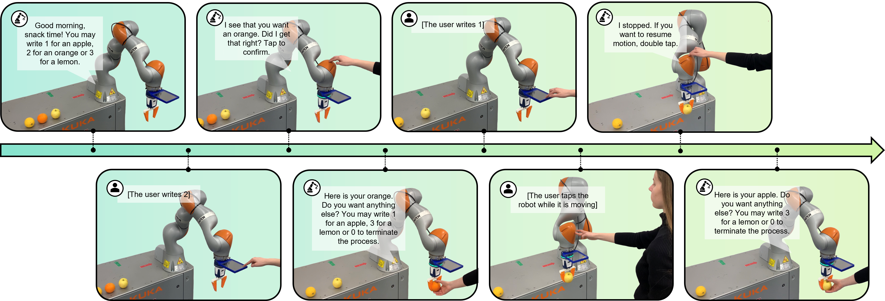

Recognizing Digits via Intrinsic Robot Tactile Sensing: System Overview

We leverage the intrinsic tactile sensing capabilities of collaborative robots to recognize digits drawn by humans on an uninstrumented touchpad mounted to the robot’s flange.
pHRI-DIGI-TACT: a dataset of draw handwritten digits (0–9) on the touchpad captured from the robot’s integrated torque sensors in each joint (joint torques along with corresponding end-effector forces and moments.
A data augmentation method accounts for reversed and rotated digits inputs.
A Bidirectional Long Short-Term Memory (Bi-LSTM) network, leveraging the spatio-temporal nature of the data.
Data augmentation to classify reversed and rotated digits
Real world deployment: fruit delivery

The proposed methodology was implemented on a real robot in a fruit delivery task, demonstrating its potential to assist individuals in everyday life.
Task management and safety are driven by a Hierarchical Finite State Machine (HFSM).
The system performs online digit classification with an overall accuracy of 94% across various test scenarios, including those involving users who did not participate in training the system.